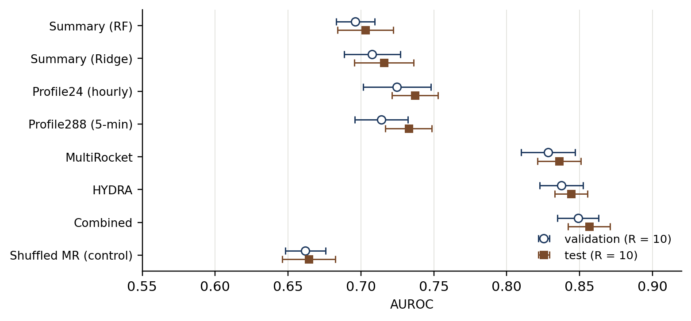
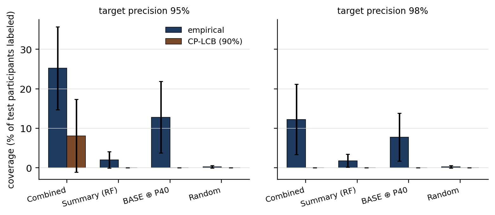

The target is the participant's recorded salutation field in the Datenspende cohort export, taking the two populated codes 10 and 20. Across the 3,848-participant Garmin cohort that anchors the newest experiments, code 20 is the majority class (prevalence 0.64; class mean of temporal_predictions.csv = 0.642). Recorded salutation is what the participant entered; it is not established biological sex or gender, and the design records no physiological or causal claim.
The newest experiments use a single Garmin subcohort (source_id == 3) with the first 40 adequate days per participant (the R1b cohort). For each participant-day we have a series of heart-rate epochs with timestamps and a local timezone, plus recording-volume metadata. We do not use anthropometrics or inter-beat intervals — those fields are absent from the export.
For a model producing a real-valued score si per participant, the primary ranking metric is the area under the receiver operating characteristic curve. It equals the probability that a randomly chosen positive scores above a randomly chosen negative (with ties split):
Two designs are matched on participants and split: we report paired per-allocation deltas. Allocation r is one of R = 10 repeated train/validation/test partitions (allocator folds, R1a-AF). For two arms A and B we compute Δr = AUROCA,r − AUROCB,r and the 95% Bonferroni two-sided simultaneous interval:
Variability across allocations is model-and-split randomization conditional on the observed cohort; it is not population uncertainty. The test split is reused across the recent experiments and is therefore exploratory by predeclared rule; conclusions about absolute generalization beyond this cohort are not established.
Table 1 lists all 14 experiment stages in chronological order. Numbers are taken from each stage's committed report (cited in the rightmost column); this synthesis does not recompute them.
| Stage | Cohort / design | Main result | Source |
|---|---|---|---|
| Pooled v1 | 20,485 all-source; default RF | test AUROC 0.7132 | REPORT.md |
| Pooled v2 | 20,485 + demographics/source indicators; new exclusions | test AUROC 0.6833 | artifacts_v2/model_report.md |
| Strict source-specific | Garmin 3,848; Apple 4,446; Samsung 541 | source-specific summaries beat demographics | artifacts_sq/sidequest_report.md |
| RF tuning | shared config adopted | max_features=0.4, min_samples_leaf=10, class_weight=balanced_subsample, depth unrestricted, n=100 | artifacts_sq/tuned_500_comparison.md |
| Feature selection (30 splits) | hygiene, corr prune, top-k | no consistent gain; selected subsets unstable | artifacts_sq/fsplit/feat_sel_report.md |
| Feature engineering | interactions, ratios, rolling diffs | max +0.0034 AUROC, intervals cross zero | artifacts_sq/feng/feat_eng_report.md |
| Informative recording / missingness | 25,784 ungated; recording + value model | combined 0.7239; recording model adds +0.0167 | 2026-09-20_informative_recording_features/README.md |
| Continuous age vs age groups | Garmin | 0.7445 → 0.7475 (+0.0029, CI [−0.0008, +0.0067]) | experiments/age_vs_agegroup_garmin_2026-09-20/results/REPORT.md |
| OR-Tools 50/50, source-balanced | Garmin / Apple / Samsung | G 0.7290/0.7094; A 0.6875/0.6787; S 0.6289/0.6493 | 2026-09-21_ortools_source_50_50_salutation_rf/PLAN.md |
| R1a circadian features | Garmin | baseline 0.7434 → combined 0.7463 (+0.0029) | experiments/r1a_circadian_garmin_2026-09-21/results/REPORT.md |
| Day-scale modelling | Garmin, k days | 0.6653 (k=1) → 0.7269 (k=32) → 0.7302 (all days) | experiments/dayscale_garmin_2026-09-21/results/REPORT.md |
| R1a-AF (R=10 allocator folds) | Garmin, 10 allocations | baseline 0.7415 → combined 0.7509 (+0.0094, allocs-positive, Bonferroni excludes 0) | experiments/r1a_allocfolds_garmin_2026-09-21/results/REPORT.md |
| R1b date-aware circadian | Garmin, R1a-AF folds, first 40 days | day-level 0.6589 → 0.6782 (+0.0193); participant 0.7415 → 0.7513 (+0.0098) | experiments/r1b_dateaware_garmin_2026-09-21/results/REPORT.md |
| Temporal representations (R1b cohort/folds) | Garmin, 10 allocations, 288 × 5-min bins × 40 days | summaries 0.7031 → Combined 0.8565 test (+0.153 vs Summary_RF, Bonferroni) | experiments/temporal_garmin/results/REPORT.md |
The pooled models (v1, v2) trained on all wearable sources at once showed that demographics alone are weak and that source exclusions and feature inclusion matter: the v2 protocol (added demographics and source indicators, changed exclusions) moves test AUROC from 0.7132 to 0.6833 — a difference that is not attributable to features alone because the cohort and split changed simultaneously. Source-specific models (Garmin/Apple/Samsung) showed that different sources have different useful representations.
Tuning established the shared configuration used in every later experiment: max_features=0.4, min_samples_leaf=10, class_weight='balanced_subsample', depth unrestricted, n_estimators=100. The two follow-up ablations tested hand-built transformations (interactions, channel ratios, rolling-window differences) and feature selection (hygiene, correlation pruning, top-k). Neither offers a reliable general improvement: feature engineering contributes at most +0.0034 with intervals that cross zero; hygiene reduces matrix width without a detected loss, while correlation pruning and top-k produce unstable subsets.
The informative-recording experiment (25,784 ungated participants) separated recording-pattern features from value features. The combined model reaches 0.7239: the recording model contributes +0.0167 beyond the value model. This establishes that how much and when data are recorded carries information about the recorded salutation, beyond what is recorded. Native NaN handling offered no detectable advantage over median imputation.
R1a added 35 hourly-profile and cosinor features; the increment is small (baseline 0.7434 → combined 0.7463). R1b extended this to per-day circadian curves over each participant's first 40 adequate days on the R1a-AF folds: day-level AUROC rises by +0.0193 (coverage-residualized: +0.0181); participant-level aggregation preserves a +0.010 increment over the R1a-AF baseline. All three increments are Bonferroni-positive. The day-scale experiment traces the prospective question: how does performance scale with the number of days sampled per participant? It rises from 0.6653 at k=1 to 0.7269 at k=32 and 0.7302 with all days; personal-baseline features help most when k is small.
Question: does within-day structure, beyond what the daily summaries already capture, add information? We bin each participant's first 40 adequate Garmin days into 288 five-minute bins (local time; 5 min × 288 = 24 h), bin-mean the heart rate per user-day, mask unobserved bins, and learn several representations of the resulting matrix. The head is ridge regression with α chosen on validation (alloc 0):
The two convolutional kernels used here are MultiRocket and HYDRA. Both apply a dilated 1-D convolution across each day's series:
with kernel length 9 and dilations d ∈ {1,2,4,8,16,32}; the per-day feature vector is max- and min-pooled over a small set of competing kernels and pooled across the 40 days by nanmean/nanstd across observed days. The Combined arm concatenates the summary, MultiRocket and HYDRA blocks; Summary_RF is the random-forest control on the summary block alone.
| Representation | validation AUROC (mean ± SD, R=10) | test AUROC (mean ± SD, R=10) | post-hygiene cols | α (frozen) |
|---|---|---|---|---|
| Summary (RF) | 0.6962 ± 0.0132 | 0.7031 ± 0.0192 | 305 | — |
| Summary (Ridge) | 0.7077 ± 0.0193 | 0.7157 ± 0.0204 | 305 | 1000 |
| Profile24 (hourly) | 0.7248 ± 0.0233 | 0.7370 ± 0.0157 | 353 | 1000 |
| Profile288 (5-min) | 0.7140 ± 0.0181 | 0.7327 ± 0.0159 | 881 | 1000 |
| MultiRocket | 0.8284 ± 0.0184 | 0.8361 ± 0.0149 | 19121 | 1000 |
| HYDRA | 0.8374 ± 0.0149 | 0.8442 ± 0.0113 | 12593 | 1000 |
| Combined | 0.8489 ± 0.0141 | 0.8565 ± 0.0146 | 31409 | 1000 |
| Shuffled MR (control) | 0.6619 ± 0.0139 | 0.6643 ± 0.0183 | 19121 | 1000 |

| Comparison | mean Δ | SD | Bonferroni 95%-simult | share > 0 |
|---|---|---|---|---|
| Profile288 (5-min) − Summary (RF) | +0.0177 | 0.0135 | [+0.0045, +0.0310] | 0.90 |
| MultiRocket − Summary (RF) | +0.1322 | 0.0241 | [+0.1085, +0.1558] | 1.00 |
| HYDRA − Summary (RF) | +0.1412 | 0.0208 | [+0.1207, +0.1617] | 1.00 |
| Combined − Summary (RF) | +0.1527 | 0.0207 | [+0.1323, +0.1730] | 1.00 |
| MultiRocket − Shuffled MR (placement isolation) | +0.1664 | 0.0225 | [+0.1443, +0.1886] | 1.00 |
The combined model adds +0.1527 over Summary_RF (paired, allocs-positive); the within-day placement isolation (MultiRocket − Shuffled MR) is +0.1664. The within-day value-shuffle control permutes observed heart-rate values among each day's observed clock-bins, leaving the value multiset, the wear mask, and the day count intact. The collapse from 0.8284 to 0.6619 says the gain is where in the day values sit, not which values are present.
Profile24 (hourly aggregation) and Profile288 (5-minute aggregation) reach only the summary level, so resolution is not the bottleneck — representation is. Per-bin daily profiles discard the local dilation/position patterns the convolutional kernels exploit at the same 5-minute resolution. We do not establish whether the placement signal is physiological (circadian phase and shape) or device-behavioral (wear-time routines correlated with the recorded salutation); the predeclared probes are night-only arms, activity-window exclusion, and importance-by-dilation.
AUROC measures ranking; the applied goal is to label a subset of participants at a target correctness and abstain on the rest. Per allocation, validation scores pick the smallest class-1 threshold achieving at least the target precision on validation, and the largest class-0 threshold doing the same on the negative tail:
Table 4 reports coverage at 95% and 98% target precision in two variants: raw (the empirical threshold) and cpc (the largest set whose 90% Clopper–Pearson lower confidence bound on precision still clears the target):
| Arm | target | variant | cov_total (%) | prec (class 20) | prec (class 10) |
|---|---|---|---|---|---|
| Combined | 95% | raw | 25.2 ± 10.5 | 0.956 | 0.937 |
| Summary (RF) | 95% | raw | 2.0 ± 2.1 | 0.873 | 0.660 |
| BASE ⊕ P40 (R1b baseline) | 95% | raw | 12.8 ± 9.1 | 0.905 | 0.852 |
| Random (sanity) | 95% | raw | 0.2 ± 0.3 | 0.644 | 0.500 |
| Combined | 95% | cpc | 8.1 ± 9.2 | 0.959 | — |
| Summary (RF) | 95% | cpc | 0.0 ± 0.0 | — | — |
| BASE ⊕ P40 (R1b baseline) | 95% | cpc | 0.0 ± 0.0 | — | — |
| Random (sanity) | 95% | cpc | 0.0 ± 0.0 | — | — |
| Combined | 98% | raw | 12.3 ± 8.9 | 0.971 | 0.945 |
| Summary (RF) | 98% | raw | 1.8 ± 1.6 | 0.867 | 0.660 |
| BASE ⊕ P40 (R1b baseline) | 98% | raw | 7.8 ± 6.1 | 0.930 | 0.872 |
| Random (sanity) | 98% | raw | 0.2 ± 0.3 | 0.644 | 0.500 |
| Combined | 98% | cpc | 0.0 ± 0.0 | — | — |
| Summary (RF) | 98% | cpc | 0.0 ± 0.0 | — | — |
| BASE ⊕ P40 (R1b baseline) | 98% | cpc | 0.0 ± 0.0 | — | — |
| Random (sanity) | 98% | cpc | 0.0 ± 0.0 | — | — |

At 95% target, the Combined model labels 25.2% of held-out participants (per-class precision 0.956 / 0.937), versus 12.8% for the R1b BASE⊕P40 baseline (ratio ≈ ×1.97). The CP-LCB variant certifies only 8.1% at 95% and nothing at 98% on the Combined arm at the available validation size (n=579); reaching 98% under finite-sample certification requires roughly 114 error-free validation selections at δ=0.10, which the model cannot attain.
Two qualifications. First, the threshold sits on the validation precision boundary, so held-out precision shrinks with selected-set size — visible on the minority class (class 10), where selected sets are small and precision drops mildly below the target. Second, abstention composition shows that abstained and labeled participants differ by mean heart rate (~71 vs ~74 bpm) and not by wear coverage (~0.90 vs ~0.88 mask coverage; ~261 vs ~254 observed bins/day): the separator is physiological ambiguity, not data scarcity, so minimum-wear gating is not the binding lever for higher coverage.
The ridge head (Eq. 3) was precalibrated on a grid [10−3, …, 103]; every family in the v1 and v2 runs selected the grid maximum α=103 (REPORT §8 caveat). An extended-grid addendum on allocation 0 sweeps [102, 3·102, 103, …, 106]:
| Family | frozen α | val @ frozen | α* | val @ α* | gain (val) | test @ frozen | test @ α* |
|---|---|---|---|---|---|---|---|
| Summary_linear | 1000 | 0.7161 | 300 | 0.7176 | +0.0015 | 0.7107 | 0.7118 |
| Profile24 | 1000 | 0.7459 | 1000 | 0.7459 | +0.0000 | 0.7404 | 0.7404 |
| Profile288 | 1000 | 0.7204 | 10000 | 0.7343 | +0.0138 | 0.7339 | 0.7178 |
| MultiRocket | 1000 | 0.8234 | 3000 | 0.8348 | +0.0114 | 0.8507 | 0.8626 |
| HYDRA | 1000 | 0.8194 | 10000 | 0.8468 | +0.0274 | 0.8401 | 0.8674 |
| Combined | 1000 | 0.8446 | 10000 | 0.8598 | +0.0152 | 0.8625 | 0.8784 |
The convolutional arms find optima well inside the extended grid (MultiRocket α*=3·103; HYDRA and Combined α*=104), and the val gains are test-corroborated at this allocation (Combined +0.0159 test). Profile288 is the exception: it shows +0.0138 on validation at α*=104 but −0.016 on test — the alloc-0 val-α selection-overfit signature, not carried forward. The frozen decision rule (Combined val gain ≥ 0.01) was triggered, and a v3 full rerun is pending the user's decision. The wider lesson: for very wide feature matrices (Combined ≈ 31,000 columns after hygiene), the v2 grid truncates the optimum and the headline AUROC is if anything understated.
| Representation | val v1 | val v2 | Δ val | test v1 | test v2 | Δ test |
|---|---|---|---|---|---|---|
| Summary (RF) | 0.6962 | 0.6962 | +0.0000 | 0.7031 | 0.7031 | +0.0000 |
| Summary (Ridge) | 0.7077 | 0.7077 | +0.0000 | 0.7157 | 0.7157 | +0.0000 |
| Profile24 (hourly) | 0.7248 | 0.7248 | +0.0000 | 0.7370 | 0.7370 | +0.0000 |
| Profile288 (5-min) | 0.7165 | 0.7140 | -0.0026 | 0.7291 | 0.7327 | +0.0036 |
| MultiRocket | 0.8276 | 0.8284 | +0.0008 | 0.8354 | 0.8361 | +0.0007 |
| HYDRA | 0.8392 | 0.8374 | -0.0018 | 0.8431 | 0.8442 | +0.0010 |
| Combined | 0.8496 | 0.8489 | -0.0007 | 0.8539 | 0.8565 | +0.0026 |
| Shuffled MR (control) | 0.6656 | 0.6619 | -0.0036 | 0.6657 | 0.6643 | -0.0014 |
Every stage was run from a frozen plan committed before any results were seen; deviations from a frozen plan are recorded as errata in the per-stage REPORT, never silent. Determinism is gated on each run: a full alloc-0 rerun must be byte-identical or differ by at most 10−6 per arm. The actual rerun differences are 1–2 unit-last-place (max 2.2·10−16), attributable to threaded-BLAS reduction order in the ridge solve (the same signature is present in pure-B40 Summary_linear, so it is not a transform artifact). MR and HYDRA transforms, and all seed streams, are bit-stable.
Resource gates: CPU torch only, peak resident-memory under 8 GiB across all stages (v2 plateau 8,197 MiB, within +0.06% of the gate; addendum peak 6,309 MiB). Vendored MultiRocket (commit 3ccaa4f) and HYDRA (commit 144bb7a) are pinned with file SHA256s in cache/vendor_repro.json. A numba-seeding shim (_nb_seed) and the documented workqueue threading layer are the two recorded environment errata.
Three follow-ups are plan-ready and pending review or decision:
None of the above establishes a causal or physiological claim; the documented scope is predictability from the export.
Notation. si model score for participant i; τ threshold; p★ target precision; α ridge penalty; d convolution dilation; R number of allocations (here 10); m number of primary comparisons in the Bonferroni family; L(s,f) Clopper–Pearson 90% lower bound on the success probability of a binomial with s successes and f failures; δ miscoverage target (0.10 here).
Files. experiments/temporal_garmin/results/REPORT.md (full per-arm results, §1–§10); experiments/temporal_garmin/results/temporal_metrics.csv and temporal_metrics_v1.csv (per-arm AUROCs); experiments/temporal_garmin/results/selective_classification.{csv,md} (per-alloc coverage-at-precision); experiments/temporal_garmin/results/alpha_addendum.{json,md} (extended-α grid); experiments/temporal_garmin/results/risk_coverage_curves.csv (full operating curves); experiments/temporal_garmin/results/abstention_composition.csv (labeled vs abstained participant statistics); experiments/temporal_garmin/NEXT_STEPS.md (roadmap + multichannel draft + selective-classification archived procedure).
reports/build_meta_report_2026-09-22.py. Inputs and figure hashes are listed in recorded_salutation_meta_report_2026-09-22_manifest.json.